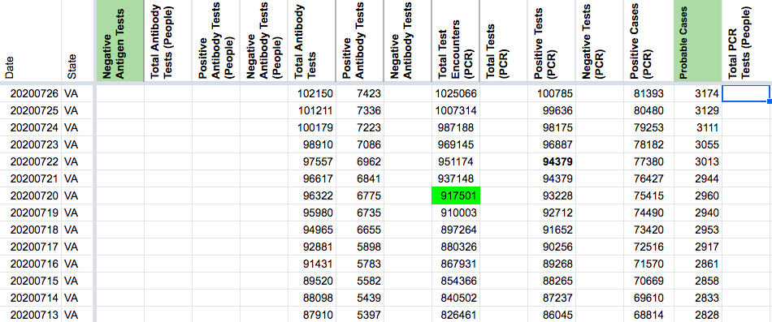
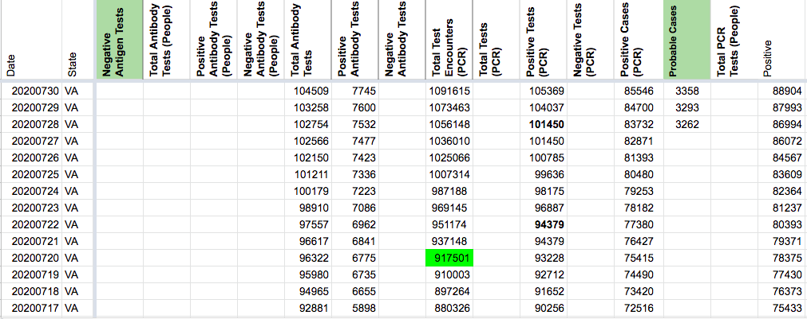

[VA] Probables Backfill
Issue number 847
jesseandersonumd opened this issue on September 18, 2020 at 10:03 am
Labels Backfill
State or US: VA
Describe the problem CTP started reporting probables generally around 7/28 for many states. VA has been reporting probables since it started separating out confirmed and probable case counts on 4/21. We can backfill probables using positive - confirmed until 4/21 and cross-referencing with screenshots.
Comments
jesseandersonumd commented on September 18, 2020 at 10:03 am
AFTER:

the-daniel-lin commented on September 24, 2020 at 1:16 pm
DC’d by DZL 9/24 13:16
BEFORE:
